The slide of the lecture is on the left, the same figure on the right, computed in the browser from the same data. The ▶ button moves the parameter step by step.
Prices and Returns · Distribution and Tails · Dependence and Its Mechanisms · Persistence and the Limits of Inference · Volatility from Open, High, Low and Close · Performance and Drawdowns · Case Studies: Path-Dependent Volatility and the Overnight Return
Prices and Returns
Five Markets: Prices and Daily Log Returns
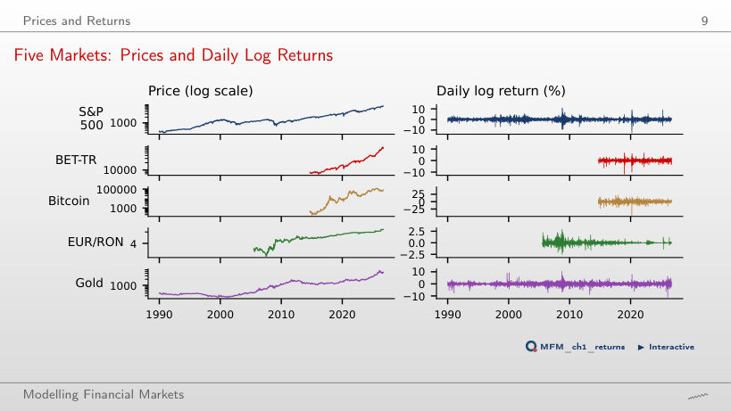
Answer
On 1.4% of the days, against 25.5% of the days for the S&P 500 and 60.8% for Bitcoin. Under the Normal distribution with the EUR/RON daily volatility, 0.28%, a move of more than 1% would occur on only 0.03% of the days. The worst Bitcoin day, 12 March 2020, has a log return of −46.5%: the price is multiplied by e−0.465, so it falls by 37.2%.
Distribution and Tails
Fact 2, Heavy Tails: Histograms and Quantile–Quantile (QQ) Plots
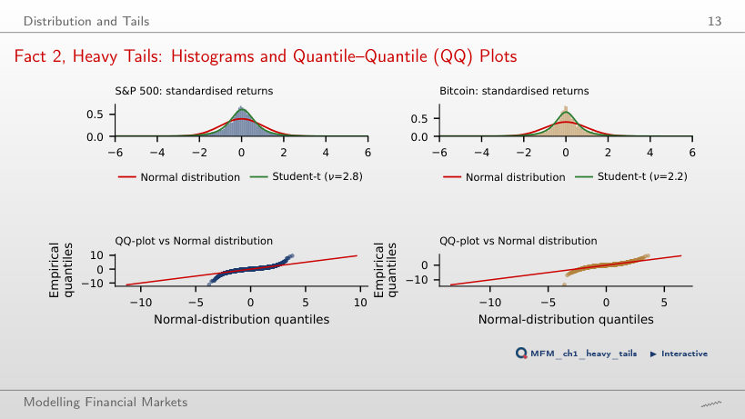
Answer
Not necessarily. A good fit in the centre does not guarantee a good tail fit: the histogram is dominated by the centre, where almost all the days lie. For the S&P 500, the empirical frequency of |z| > 4 is 0.67%, versus 0.006% under the Normal distribution and about 0.84% under the Student-t with the initially displayed ν = 2.8. The QQ plot and the Hill estimate, α̂ = 3.07 at k/n = 2.5%, provide additional diagnostics. Matching one threshold does not validate the entire tail.
Hill Plots for Five Markets
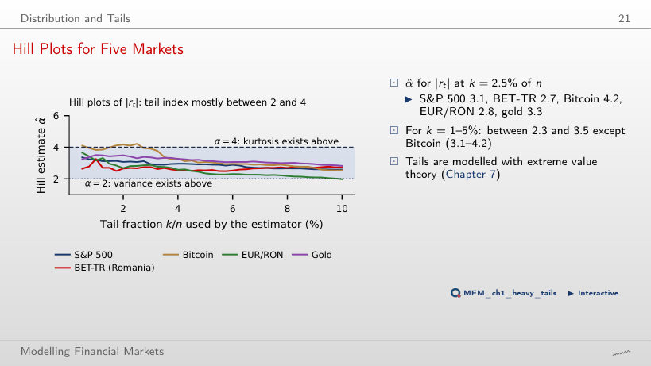
Answer
No. The approximate 95% i.i.d. interval, [3.43, 5.01], includes values below and above 4; the interval using the block-bootstrap SE also includes 4. Moreover, the Bitcoin Hill plot is not stable around the chosen threshold. Positive sample excess kurtosis does not establish whether the population moment is finite. At the same threshold, α = 4 lies outside the 95% intervals of the other four markets; the conclusion remains conditional on the Pareto tail approximation and on the threshold k/n.
Fact 3: Gain/Loss Asymmetry in the Data
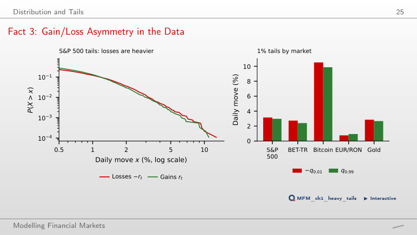
Answer
The difference is not significant at the 5% level: Δ = 3.15 − 2.97 ≈ 0.18 pp, and the 95% block-bootstrap interval, [−0.12, 0.49] pp, contains zero. A positive point estimate and larger losses on other markets do not replace inference for the S&P 500. Among the five markets, only EUR/RON has an interval excluding zero: Δ ≈ −0.17 pp, interval [−0.35, −0.07] pp.
Dependence and Its Mechanisms
Facts 1 and 6: Uncorrelated but Not Independent
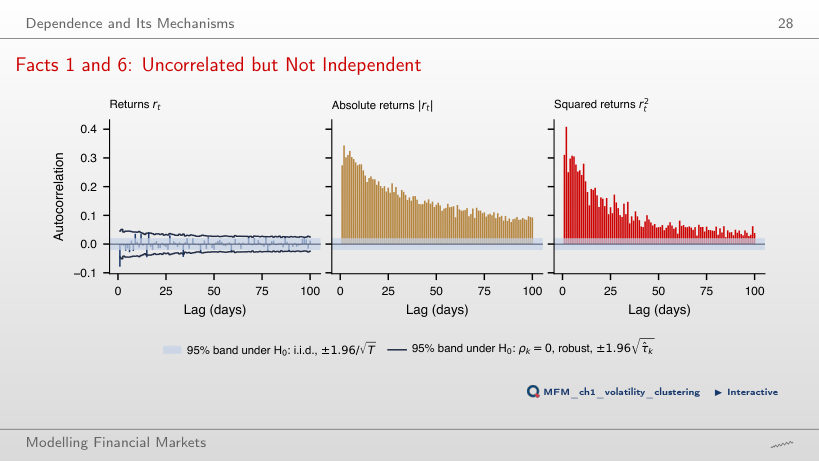
Answer
The bands are pointwise and approximate. Under their calibration assumptions, about 5 exceedances out of 100 are expected on average even under the null; this is not a guaranteed limit. The page finds 20 exceedances using the i.i.d. band and 7 using the robust band. Small autocorrelations do not imply independence: the autocorrelations of |rt| and rt2 are positive at all 100 lags. The bands remain conditional on assumptions about moments and dependence.
Fact 5: Intermittency in the Data
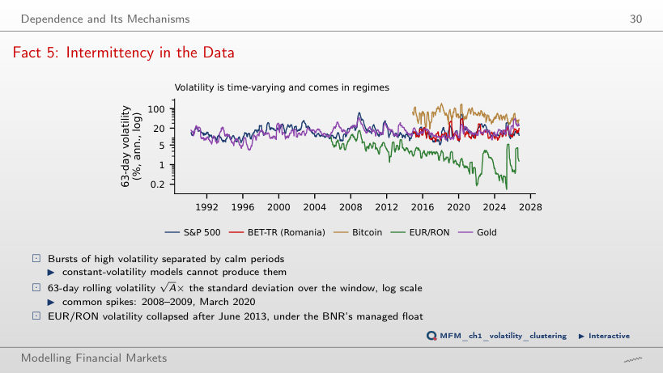
Answer
A longer window generally smooths the series but responds more slowly to persistent changes in volatility. The annualisation factor does not remove the effect of window length. We do not add volatilities: we recompute the standard deviation from the observations in each window. For EUR/RON, the mean 63-day rolling volatility drops from 5.8% before July 2013 to 2.0% after; in the lecture, the variance-break test dates the change on 27 June 2013, with subsample volatilities of 6.6% before and 2.2% after.
Fact 4: Aggregational Gaussianity
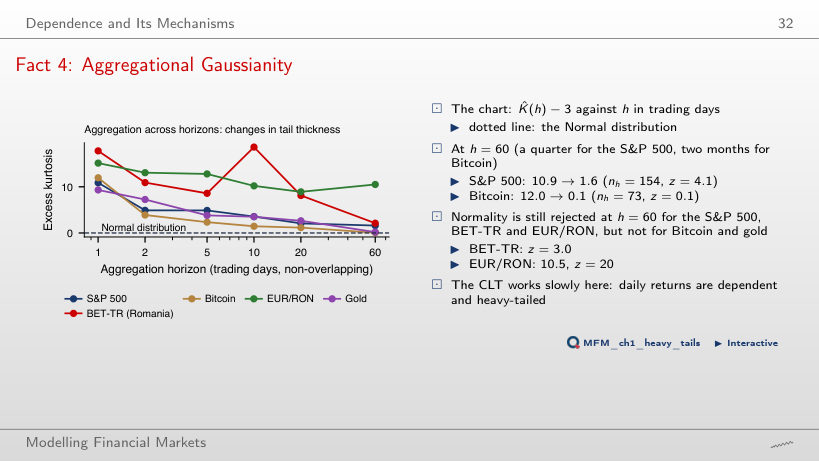
Answer
|z| ≈ 0.10 is below 1.96, so this diagnostic does not reject the null. Non-rejection proves neither normality nor independence. At h = 60, the threshold is exceeded for the S&P 500 (excess kurtosis falls from 10.9 to 1.6, nh = 154, z = 4.1), BET-TR (z = 3.0) and EUR/RON (z = 20). The calibration z = (K̂ − 3)/√(24/nh) is asymptotic and assumes i.i.d. Normal observations under the null.
Fact 9: The Leverage Effect
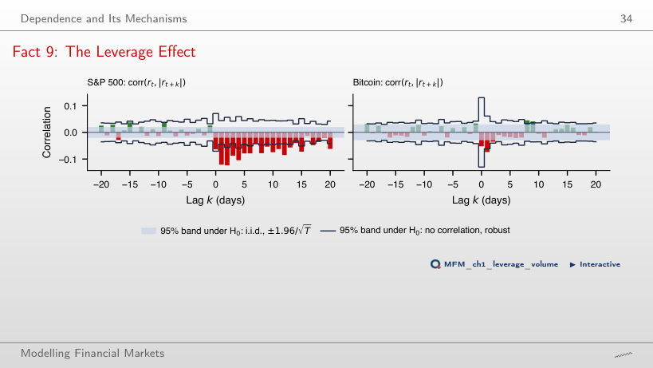
Answer
No. The comparison shows a descriptive association between the current-return group and the size of the next return. Equally frequent groups need not have equal |rt|. L(1) = −0.12, with z ≈ −5.4 using the robust SE, does not replace a comparison at equal shock size. On EUR/RON the sign is reversed: L(1) = +0.10 (z = 2.5).
Fact 10: Volume and Volatility Move Together
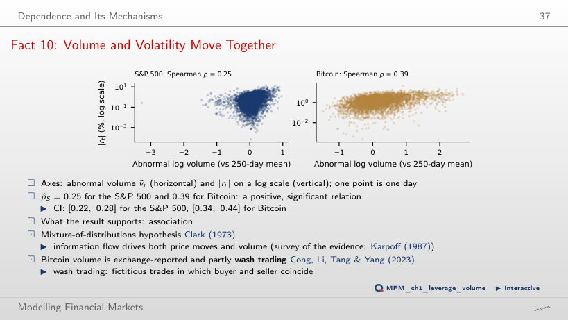
Answer
No. With the 250-day window, the correlation is 0.25 for the S&P 500, with interval [0.22, 0.28], and 0.39 for Bitcoin, with interval [0.34, 0.44]. The intervals support a positive association, not a causal explanation. Ranks do not remove common factors or reverse causality. For Bitcoin, the volume reported by exchanges includes wash trading.
Persistence and the Limits of Inference
Fact 8: Slow Decay of the ACF of |rₜ|
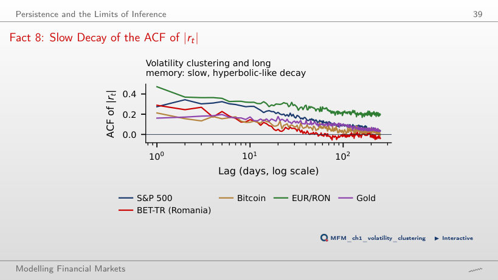
Answer
No. For the S&P 500, the ACF of |rt| is about 0.27 at lag 1, 0.22 at lag 20 and 0.09 at lag 100. At long lags it exceeds the exponential reference fitted here on lags 1–20. This pattern is compatible with long memory but can also arise from shifts in the volatility level. The local Whittle estimate d̂ ≈ 0.48 does not by itself rule out that explanation; on the five markets, the semiparametric estimators give d̂ between 0.35 and 0.50.
The Taylor Effect
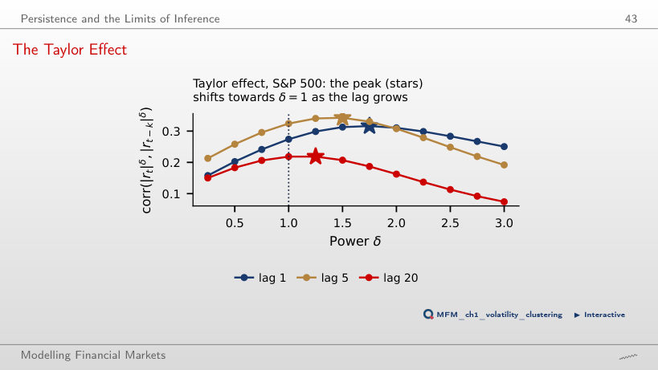
Answer
No. On the page’s grid of powers, the maximum occurs at δ = 1.75 for lag 1. The difference from δ = 2 is about 0.005, but the page does not estimate uncertainty about this difference. The maximum is descriptive; the chart establishes neither superiority nor equality in the population. The maximum moves with the lag: δ = 2 at lag 2, 1.5 at lag 5 and 1.25 at lag 20.
Volatility from Open, High, Low and Close
Open, High, Low and Close (OHLC) Prices of One Day
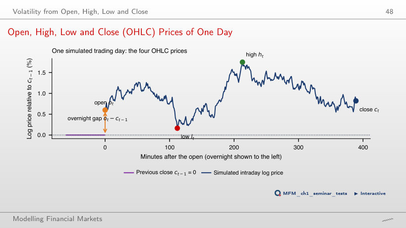
Answer
Yes. If the close equals the open, the intraday return is zero, but the range ht − lt can be large. The close-to-close return can remain nonzero if there was an overnight jump. For a driftless Brownian log price, E[(ht − lt)2] = 4 ln 2 · σ2, where σ2 is the variance over the trading session. In the ideal model without overnight jumps, the Parkinson variance estimator has relative efficiency of about 5 compared with close-to-close.
Volatility Estimators on the S&P 500
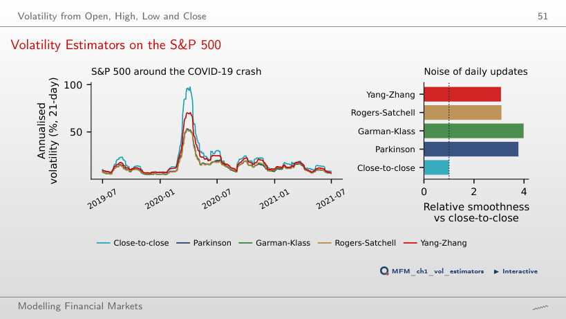
Answer
Parkinson uses only the intraday range and does not explicitly include the overnight return. Yang–Zhang includes it, so the same explanation does not apply. For the S&P 500 index, the slides also document stale open. Mean estimates over 21-day windows in 2008–2026 are 16.4% for close-to-close, 13.0% for Parkinson and 13.9% for Yang–Zhang. Neither efficiency nor smoothness requires a lower mean; the page’s smoothness measure is a ratio of variances of daily changes in the estimates.
Performance and Drawdowns
Drawdowns Across Markets
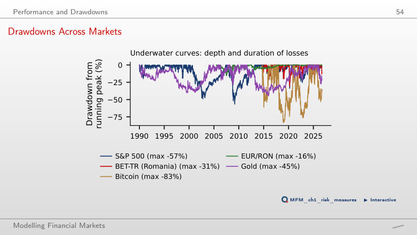
Answer
+131%. The index fell from 1,565.15 (9 October 2007) to 676.53 (9 March 2009), i.e. by 56.8%, and after a fall x, regaining the peak requires a gain of 1/(1 − x) − 1. The drawdown on the log scale, −ln(1 − 0.568) = 0.84, is not the gain needed: e0.84 − 1 = 131%.
Risk and Return Across Markets
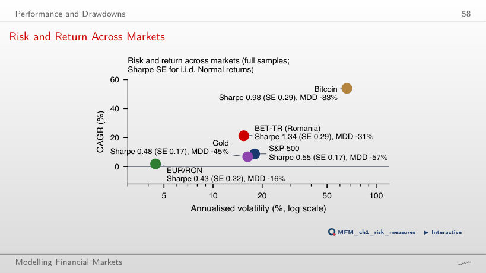
Answer
No. The chart compares different samples and series with different dividend treatment and currencies. Including dividends in BET-TR is appropriate for total returns; comparing it with an S&P 500 price index is inconsistent. Separately, using rf = 0 instead of a positive risk-free rate increases the calculated Sharpe ratio. From 2015, the page gives Sharpe ratios of 1.38 for BET-TR, 1.05 for Bitcoin and 0.73 for the S&P 500, with individual SEs of about 0.29 under the i.i.d. Normal formula. Inference about differences also requires the covariance between the estimates.
Case Studies: Path-Dependent Volatility and the Overnight Return
Case Study (3/4): Observed VIX and VIX Fitted from S&P 500 Returns
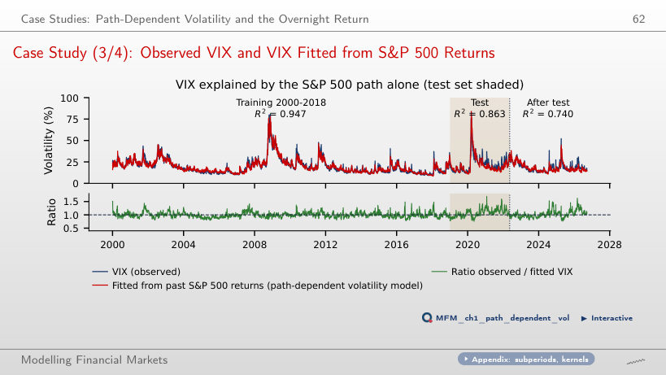
Answer
With 5 returns, test R2 is 0.695, versus 0.863 with 1,000 returns. The value 0.947 is training R2 for the 1,000-return history. The roughly 20% weight of the first 5 days in the 1,000-day kernel is not R2: the page renormalises the kernels and re-estimates β. The calculation for VIXt uses rt, rt−1, …; it is not a forecast of VIXt made at t−1.
The Market Return Around the Clock (2/4): SPY Overnight and Intraday
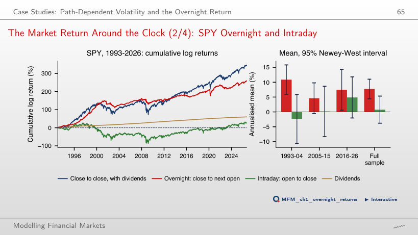
Answer
|t| = 0.33 does not exceed the asymptotic threshold of 1.96. The positive estimate is not precise enough to reject a zero mean; non-rejection does not prove that the mean is zero. Separately, the overnight mean is 7.7% a year (t = 4.6), and about 91% of SPY’s cumulative log price return comes from overnight; dividends, 1.8% a year, are accounted for separately.
Daily closing prices up to 18 September 2026: S&P 500, BET-TR, Bitcoin, spot gold and VIX from EODHD; EUR/RON: the BNR reference rate. Case study 2: SPY (open, close, adjusted close) and Bitcoin 5-minute bars from EODHD. Log returns, each series on its own calendar.